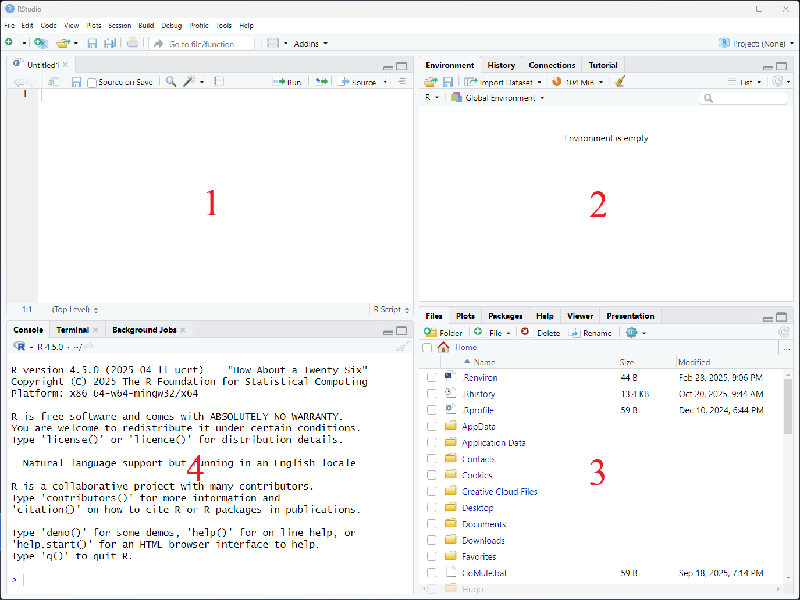
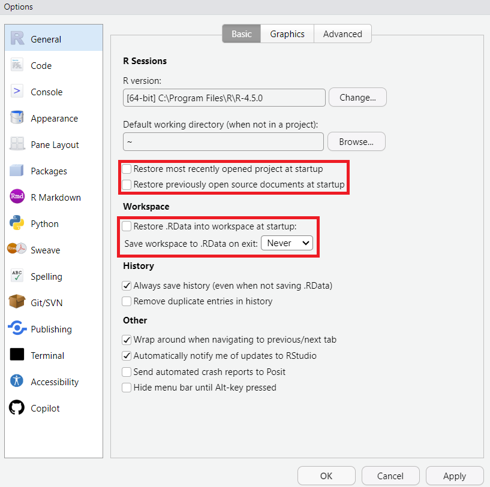

weight <- 50
weight[1] 50R is a programming language as well as the software that runs R code written in that language.
RStudio is separate software which provides an interface that makes it more conveneient to interact with R and write R code.
RStudio can help with many advanced tasks, but we’re going to be focussing on the core features.
In the default layout there are 4 panes, clockwise from top left:

These 4 panes contain most of the features you need to start working with R.
We will also change a couple of settings by selecting Tools → Global Options:

Ensure the settings under ‘R sessions’ are unticked, and the settings under ‘Workspace’ are unticked and set to ‘Never’. This ensures R starts a fresh session each time you open it and helps to prevent confusion, especially when learning.
Other RStudio features we will see as the lesson progresses:
It’s good practice to organise files relating to research projects into their own project folder. A well-organised project is easier to navigate, more reproducible, and easier to share with others.
Let’s create a basic project directory outside of RStudio now to mimic the kind of project we might want to set up (or already have going). For the purposes of this lesson we’ll create our project folder on the desktop, but you will likely have your project folders elsewhere (hopefully in a University-approved place). Create the following folders:
r-workshop
│
└── data_raw
│
└── figuresRStudio provides a “Projects” feature that makes it easier to work on individual projects in R. We will create an R project using the project folder we just created.
One of the benefits of using RStudio projects is that they automatically set the working directory to the top-level folder for the project (r-workshop here). The working directory is the folder where R is looking for files to bring in, and the place to save outputs. R views the location of all files in the project as being relative to the working directory. You may come across scripts that include something like setwd(“/Users/UserName/MyProject”), which directly sets a working directory. But this script is unlikely to run on anyone else’s computer, since that specific directory is probably unique to the person who wrote the script. Using RStudio Projects means we don’t have to deal with manually setting the working directory, and it means that R projects are fully self-contained.
Next time you open RStudio, you can click that 3D cube icon, and you will see options to open recent projects, like the one you just made.
Let’s move the workshop data file into the data_raw folder now. Next we need to unzip the file so that the 5 files inside are now sitting in the data_raw folder. You should see a file called surveys_complete.csv which is the data we will use first. You should also see this same data file split into 4 separate spreadsheet files, which we’ll use later to demonstrate how to read multiple files in at once.
The essence of programming is writing down instructions for the computer to follow, and then telling the computer to follow those instructions. We write the instructions in code, which is a common language that is understood by the computer and humans (after some practice). We call these instructions commands, and we tell the computer to follow the instructions by running (also called executing) the commands.
You can run commands directly in the R console, or you can write them into an R script. It may help to think of working in the console vs. working in a script as something like cooking. The console is like making up a new recipe, but not writing anything down. You can carry out a series of steps and produce a final dish at the end. However, because you didn’t write anything down, it’s harder to figure out exactly what you did, and in what order.
Writing a script is like taking notes while cooking. You can tweak and edit the recipe all you want, you can come back in 6 months and try it again, and you don’t have to try to remember what went well and what didn’t. To cook the recipe again we can hit a single button in RStudio to run an entire script.
You can also leave comments for yourself or others to read in your script. Lines that start with # are considered comments and will not be interpreted as R code.
Console
Script
Most of your R code should be saved in a script, but sometimes we need to do things that we don’t need to preserve in our script. For example, we shouldn’t put commands to install packages in our scripts, but we do need to load the packages we use at the start of a script.
Go ahead and type a math equation into the console and hit enter. Note how the result is printed immediately. Now create a script, save it as something like ‘analysis.R’, type the equation in, and hit enter. Note how the cursor moves to a new line. To run the equation in the script, click anywhere on the line of code and either click the ‘Run’ button on the top right of the script, or use Cmd+Enter (Mac) or Ctrl+Enter (Windows) to send the equation to the console.
From now on, use a script to write and execute the code in this workshop.
In R, we can assign values to objects by using the assignment arrow <- (shortcut Alt+- on Windows/Linux and Cmd+- on Mac). Whatever is on the right of the arrow will be assigned to whatever is on the left. To create an object we provide a name for the object and assign a value.
For example, to assign the number 50 to an object called weight:
We can do calculations with objects and store the results in other objects:
We can override assignment
Even though we’ve changed the value of weight, the value of weight_lb does not change, unless we run the conversion to pounds again.
When naming objects:
Functions are the workhorse of many programming languages, including R. Functions usually take one or more inputs, do something with the input, and create an output. We can think of a function as a piece of ‘canned code’ because they are made up of one or many lines of code in the background.
Inputs are called arguments. Understanding which function to use to achieve a particular task comes with time and experience. To understand which arguments can be used we can look at the documentation provided for the function.
Let’s look at the round() function as an example. To learn more about a function, you can type a ? in front of the name of the function, which will bring up the documentation for that function:
We can see that round() takes x, a numeric vector, and an option called digits to indicate how many decimal places to round to. X is required so we need to provide it. We’ll come back to vectors later, but for now we can think of vectors as one or more values:
Note we get back 3. So the default behaviour is to round to whole numbers. If we wanted to specify differently, we could supply the digits option:
When specifying arguments in the order expected by the function we don’t have to name them:
But it makes your code clearer to name arguments, especially when you’re learning.